Korčula and Lumbarda
Korčula Old Town is a compact peninsula of honey-colored stone, laid out in a herringbone street pattern designed centuries ago to funnel sea breezes through the town and keep it cool — a detail you can still feel walking its narrow lanes today. It's known as the birthplace (disputed, but proudly claimed) of Marco Polo, and the town's rooftops, bell tower, and fortified walls make for some of the most classic Dalmatian views on the whole coast, especially at sunset over the harbor. A few minutes away, Lumbarda is Korčula's low-key wine country — home to the Grk grape, a crisp white found almost nowhere else in the world, grown in the sandy vineyards near town. It's a place for slow afternoons: wine tastings at Bire and Sabulum, pomegranate blossoms and basil catching the light, and turquoise water near Prvi Žal that rivals anything on the coast. Together, Korčula town's stone-and-history density and Lumbarda's easy rural pace make for one of the trip's best pairings — a walkable old town balanced by a reason to slow all the way down.
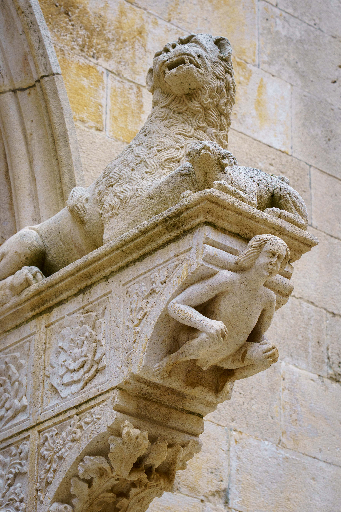
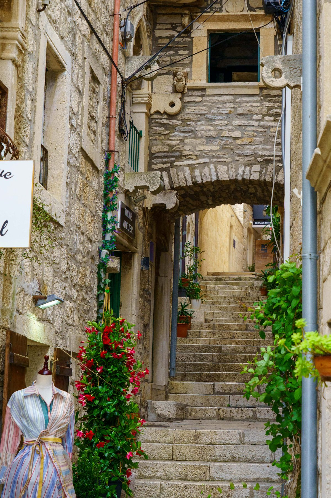
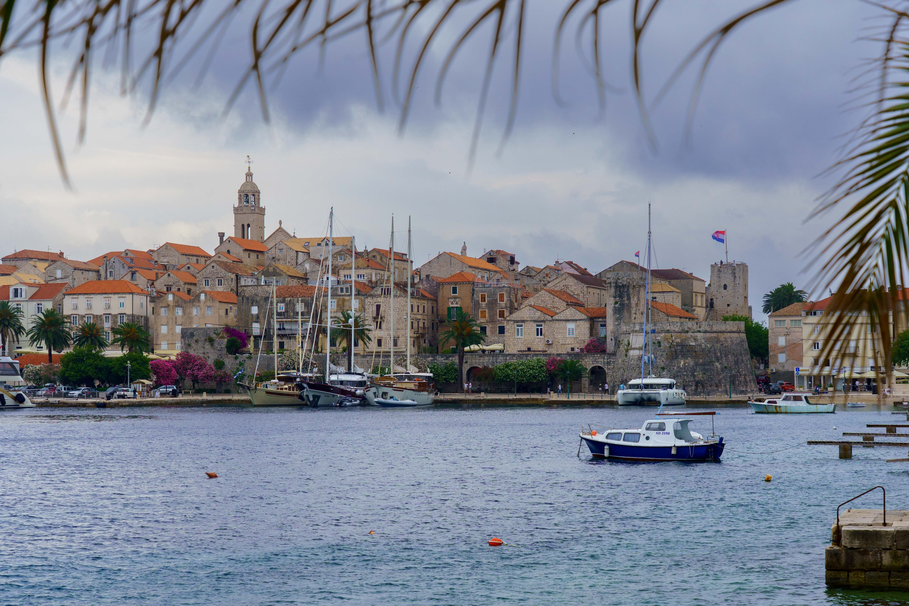
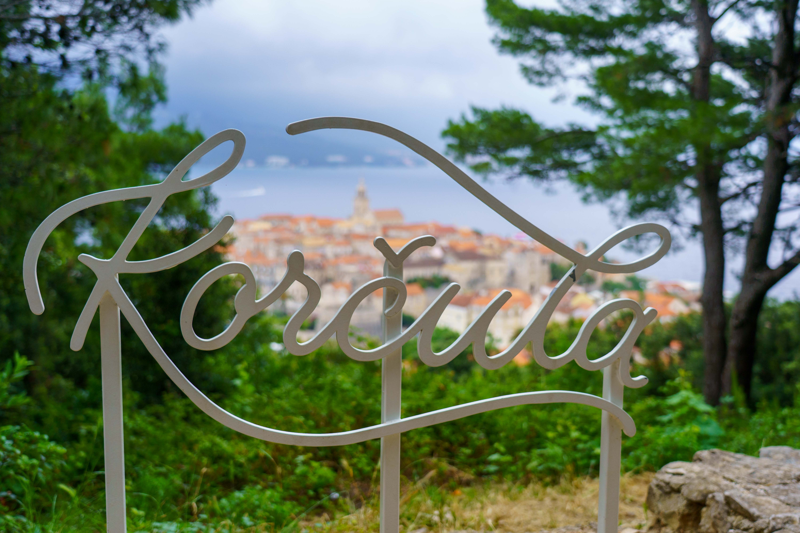
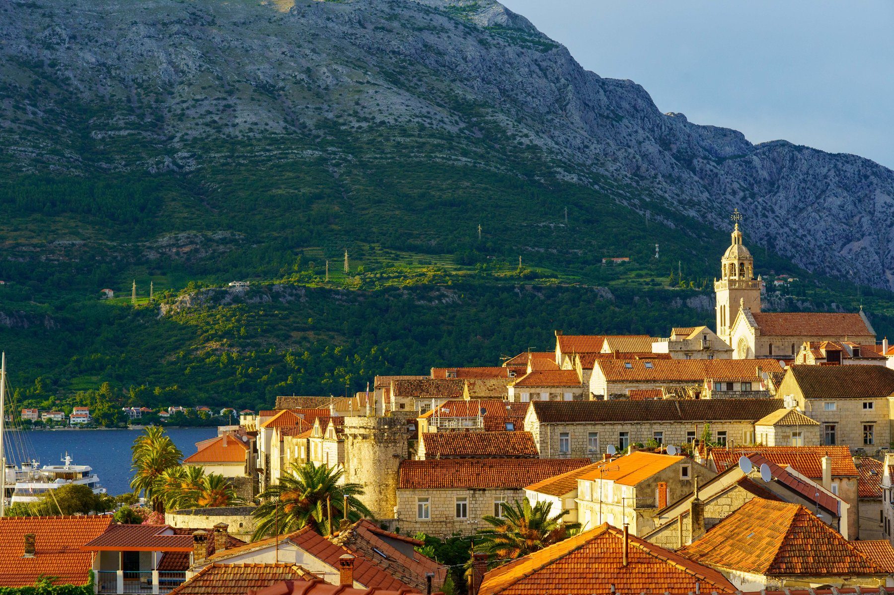
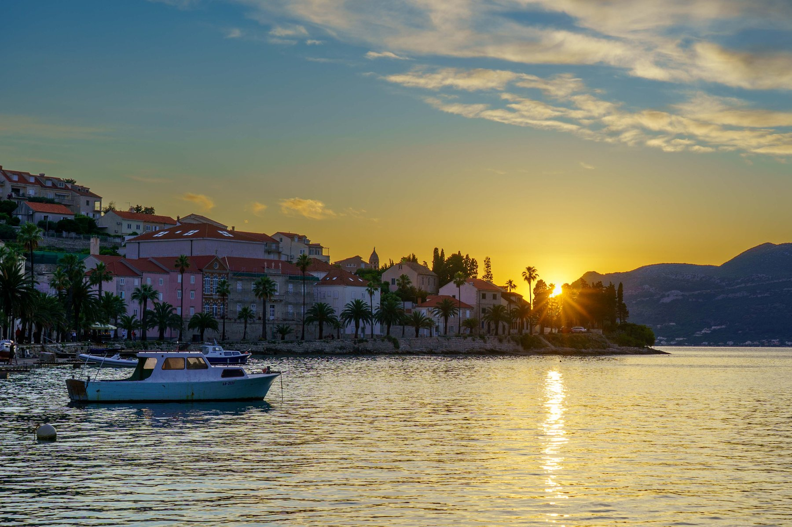
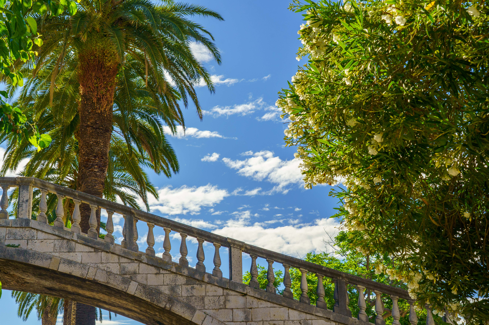
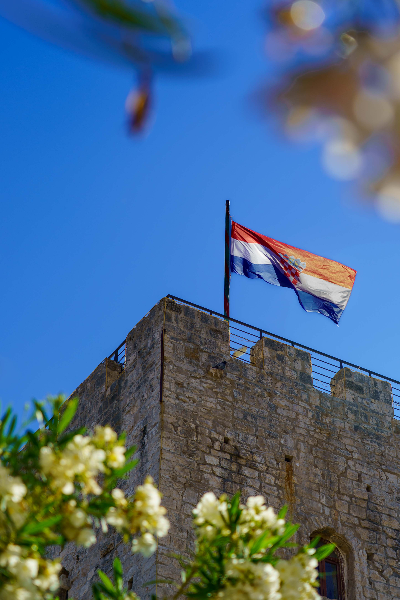
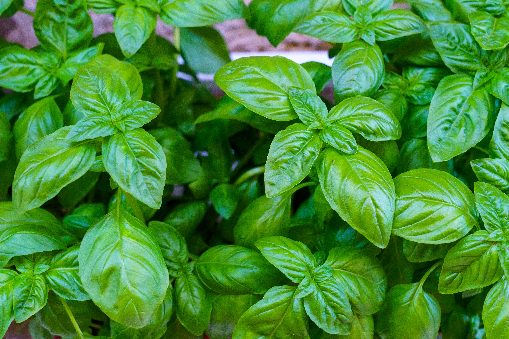
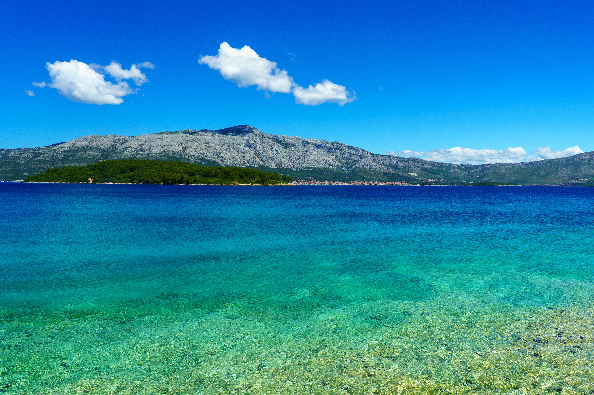
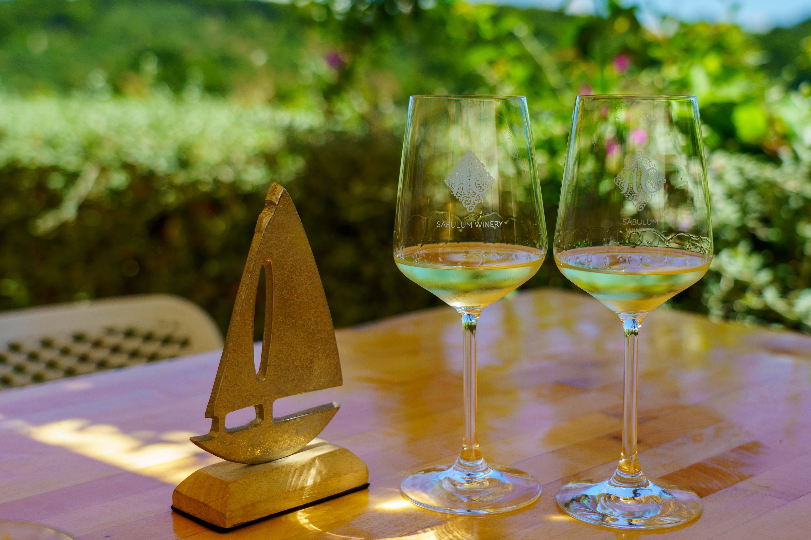
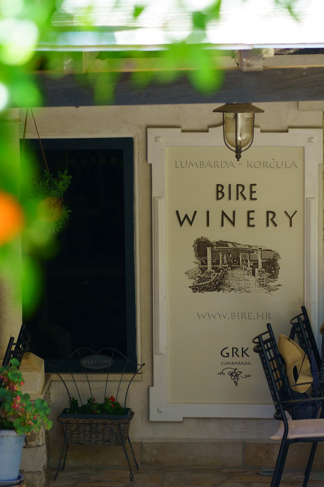
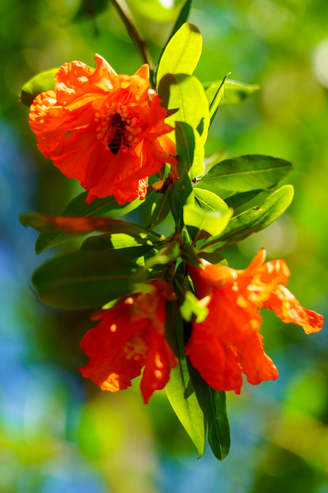
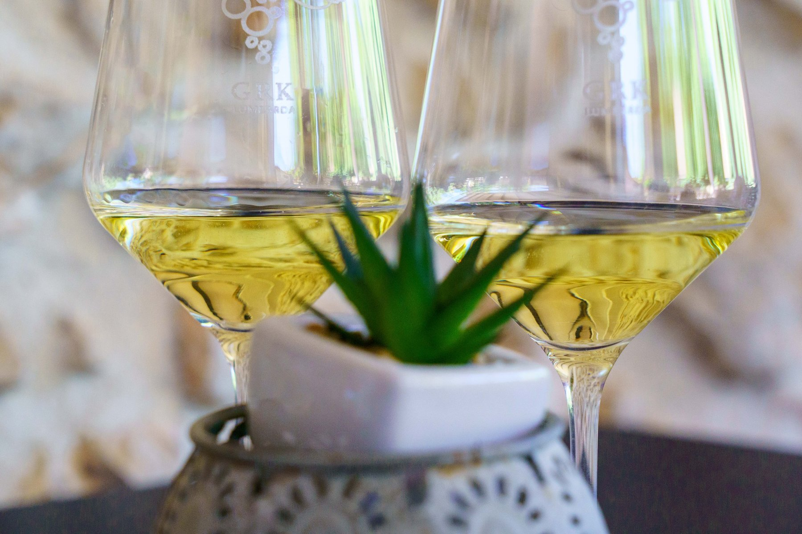